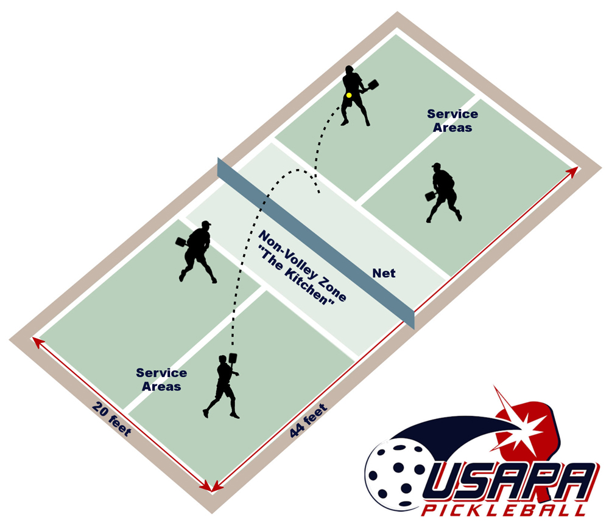

Basic Rules
Players hit the ball back and forth over the net. The goal is to keep the ball inside the court.
When serving, the ball must be served diagonally across the court. For a volley serve, the ball must be hit below the waist with an underhand motion.
Kitchen Rules
The kitchen is the area close to the net. A player cannot stand in the kitchen and hit the ball before it bounces.
A player can go into the kitchen to hit the ball after it bounces. A player also cannot step into the kitchen because of their momentum after hitting a volley.

Scoring
Pickleball games are usually played to 11 points. A player or team must usually win by 2 points. In traditional scoring, only the serving team can score.
How to Play
- Decide who serves first.
- Serve the ball diagonally and below the waist.
- Let the ball bounce when required.
- Hit the ball back and forth over the net.
- Keep playing and scoring points.